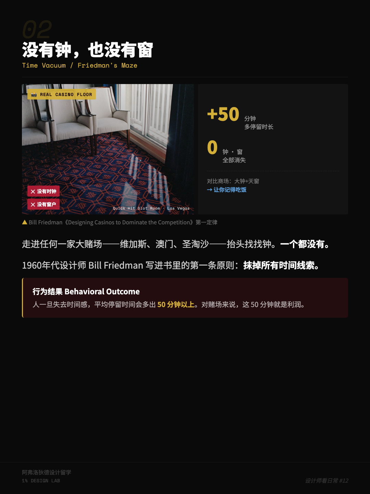
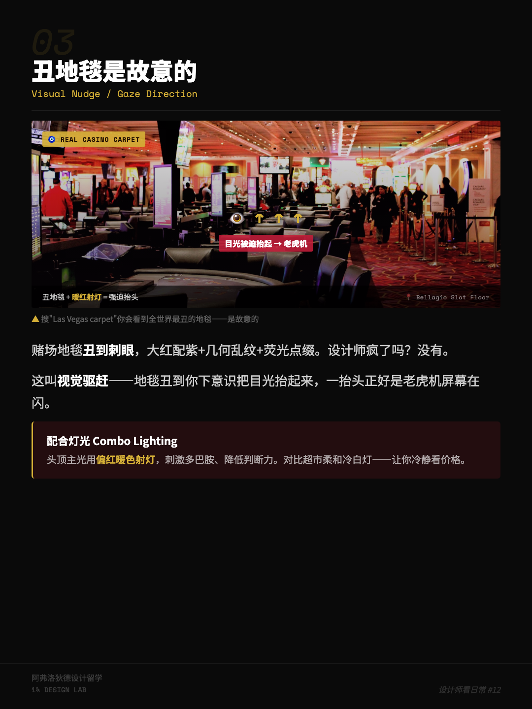
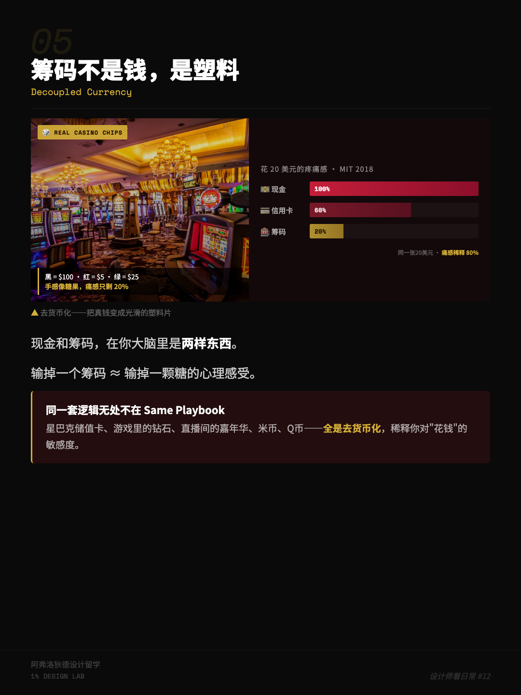

A few days ago I finished watching that Las Vegas episode by Yingshi Jufeng (影视飓风, a Chinese tech video channel). They walked in carrying a million-dollar check, and walked back out with it completely intact — the kind of video you might not stumble on once in ten years. The comments were all cheering, but I zoned out staring at the screen.
I’m a designer. Whether they won or not, honestly, I don’t care that much. What I care about is something else: why is it that the moment you walk into a place like that, you can’t bear to leave? Every meter of that space feels like it’s wrestling with human nature — and wrestling with real method.
Later I turned that curiosity into a Xiaohongshu post, and the response was bigger than I expected. But moving it back to my own site this time, I want to be more honest — either verifying or deleting the groups of numbers in the original draft that sounded impressively professional. The spatial psychology is real, but the moment you lean on fake precision to carry the show, the louder the claim, the emptier the foundation. I’ve fallen into that hole myself; this time I want to walk around it.
Stop asking “how does the casino scam your money.” The real question is: which of your instincts is it actually hijacking — to make you willingly sit a little longer, bet a little more?
One. No clocks, no windows — how does time “disappear”?
Any big casino you’ve walked into — Las Vegas, Macau, Singapore’s Sentosa — do one thing once you’re inside: look up, find a clock.
None.
Now look for windows.
None either.
This isn’t designers being lazy. It’s deliberate. Casino design has one unavoidable figure named Bill Friedman — he ran casinos himself, gambled himself, and later wrote a very thick book, Designing Casinos to Dominate the Competition. The first rule in the book, roughly: strip out every single thing that could cue time, without exception.
Once people lose their sense of time, they stay longer — few people argue with that direction. But my original draft had a line about “on average staying 50+ minutes longer,” and when I went looking this time, I couldn’t find a first-hand source that holds up. So I’ll come clean: I buy the direction, but I can’t produce the specific number, and you shouldn’t take it too seriously either. The logic is sound, though: no windows, so you don’t know it’s gotten dark outside; no clocks, so you don’t know how long you’ve been there; cheap food appears within arm’s reach the moment you’re hungry, and the moment you get drowsy the lights and sounds keep propping you up. Time — the external anchor that’s supposed to help you make decisions — gets pulled out, one cue at a time.
For contrast, look at IKEA, Wanda Plaza, outlet malls. These places can’t wait to use glass curtain walls and skylights to tell you “it’s broad daylight outside,” and they hang large clocks in prominent spots, terrified you might not know what time it is. Because a mall’s math is: you finish buying smoothly and leave, so the next customer can come in. A casino wants the exact opposite — it wants you to stay.
Casino vs. mall: same spatial problem, two opposite answers
- Mall
- Profit = how fast you finish buying and leave (the conversion-rate model). So it hangs time cues in the most prominent places, pushing you to close the deal efficiently.
- Casino
- Profit = how long you’re willing to stay (the retention-time model). So it pulls out the time cues one by one, making you forget to leave.
Two. The eye-stabbingly ugly carpet is on purpose
Go search “Las Vegas casino carpet” — the results will burn your eyes. Red on purple, geometric lines tangled into a mess, with the occasional stab of neon.
Did designers collectively lose their taste? No.
The industry has a phrase for it — “visual eviction.” The carpet is ugly enough that you instinctively avoid looking down at it, so your gaze lifts. Look up, and there’s an entire wall of slot machines flashing at you. Pair that with the warm, reddish spotlights overhead, and the whole person gets baked into a mild mania — restless, unable to sit still, looking for stimulation.
Again, compare a supermarket: soft cool-white light, plain floor tiles, price tags written out clearly. That’s there to calm you down and make you read prices carefully. The casino doesn’t want you calm. It wants you staring at the screen, forgetting who you are — and even more, forgetting how much is left in your pocket.
Honest caveat: The internet loves to say “red light stimulates dopamine and lowers your judgment” — I’ve heard it countless times. But at the level of one specific, real casino, exactly how much that slight color-temperature difference actually shaves off your judgment — I haven’t seen measured data that convinces me. I’m inclined to believe the overall manic atmosphere baked up by “warm light + noise + constant flashing” is real. As for pinning it precisely on the word “dopamine” — raise an eyebrow.


Three. The cruelest trick: Near-Miss, the “almost win”
The first two tricks are about “making you stay.” This one is about “making you unable to stop.” I think it’s the most sinister.
The slot machine’s three reels spin. The first two land on cherries. The third stops one notch short — also a cherry. You lost. But your brain doesn’t read it that way. It lies to you: “So close — one more try!”
Among scholars who study gambling addiction, there’s one named Robert Breen, who has followed the most deeply hooked slot-machine players over the long term. Work in this area has indeed found that the excitement delivered by a “near-miss” is, in people’s own subjective experience, nearly indistinguishable from the excitement of an actual win. The money is truly gone — but the emotional reward you walk away with is as full as if you’d won.
What’s crueler is that the slot machine’s program has been tuned by hand. It deliberately raises the frequency of “one notch short” outcomes, rather than being honestly random. Nevada’s gaming regulators in the U.S. have indeed written rules around “near-misses” — but the gray zone in enforcement, truthfully, has always been there.
Another candid note: Breen’s research on gambling addiction is real. But that precise description floating around the internet — “in such-and-such year, a brain-imaging study showed activation in such-and-such region was nearly identical” — I couldn’t find an original paper that matches it airtight. I believe the direction; on the details, please keep your judgment.
Think about what that means. Ordinary retail has prices on display: you spend 20 on a bottle of water, the water is 20, money and goods settled. The casino does something else — it repackages every loss as “you almost won.” It forcibly rewrites loss as hope.
It didn’t change the fact that you lost — it only changed how losing feels. Rewrite loss as hope, and you’ll talk yourself into one more try.
Four. A chip isn’t money — it’s a smooth piece of plastic
This one, I think, is the most worth every person building a consumer product copying into their notebook.
Cash and chips are, in your head, two different things.
There’s a widely circulated claim: spending the same $20 hurts most when you peel off cash; less when you swipe a card; and barely at all when it becomes a casino chip. The name given to this phenomenon is “demonetization” — diluting the pain of the spending moment as much as possible.
Same caveat as before: That oft-cited experiment pinning “cash pain 100%, credit card 60%, chips 20%” — I couldn’t trace it to a first-hand source. MIT behavioral economist Drazen Prelec did study how credit cards make people spend more, and that direction is solid and verifiable; but those percentages down to the single digit look more like something later people fabricated. My advice is the same as before: trust the direction, not the numbers.
Why do chips work? Because what you’re clutching isn’t money — it’s a smooth, weighted, actually-quite-pleasant-to-hold piece of plastic. Losing a chip feels psychologically close to dropping a piece of candy. That tactile sense of “being emptied” when money leaves your pocket is completely severed by this layer of plastic.
Side note: Starbucks stored-value cards, diamonds in games, the “Carnival” gift in a livestream room, the pleasantly-named virtual coins inside an app — all of these are cousins of the same trick. Their shared principle, in one sentence: take real money, and swap it for an intangible middle thing you can’t feel losing.

Whenever a product makes you “top up, then exchange, then spend,” it’s almost certainly using the chip trick on the sly. Every dollar you spend has been padded with a layer of cushion.
I brought this logic back to the products I build
Once you’ve seen the casino, what product people should learn isn’t how to scam — it’s to see clearly the mechanical structure of “keeping people.” These three tricks — do they look familiar?
- Time anchors — in your product, is there a natural exit that tells the user “about time to wrap up”? Or is it, like a windowless casino, infinite refresh, forever loading the next screen?
- Near-miss effect — lucky draws, loot boxes, that progress bar showing “2% until level up” — are you using it to give the user a real sense of progress, or to manufacture the addiction of “one more try and I’ll make it”?
- Demonetization — virtual coins, stored-value balances, auto-renewal — are you saving the user the friction of paying, or diluting their sense of “I am currently spending money”?
Let me be clear: these three blades have no morality in themselves. In a chef’s hand a blade cooks; in a thief’s hand it commits a crime. The only difference is — when you make the user stay a little longer, is it for their good, or just to make your retention curve look nice.
Next time you walk into any place that’s “especially good at keeping you,” ask yourself three questions
- Hunt for time anchors: Does this place have a clock? A window? Anything at all reminding you “about done, time to go”?
- Hunt for failure rewrites: When you “didn’t get it,” does it honestly tell you that you didn’t get it — or dress it up as “oh, so close”?
- Hunt for middle currencies: Are you paying directly — or did you first have to convert your money into some token, points, or virtual coin?
Once you’ve asked these three questions, you’ll notice: a lot of apps, livestream rooms, and arcades are running the exact same playbook as the casino.
- The four mechanisms in this piece (no clocks or windows, warm-light eviction, the near-miss effect, chip demonetization) are widely discussed directions in casino design and behavioral economics — not my original discoveries.
- Bill Friedman’s Designing Casinos to Dominate the Competition is a real industry work; Robert Breen is a scholar who has long studied gambling addiction; Drazen Prelec has studied the effect of credit cards on the pain of paying — this direction is verifiable.
- Several precise numbers in earlier versions of this piece — “stays 50 minutes longer,” “pain drops to 20%,” “red light triggers dopamine” — I couldn’t match one-to-one to first-hand papers, and have flagged them honestly in the text. The direction is credible; on the numbers, please keep your own judgment.
- This piece is not an anti-gambling sermon, still less any kind of betting advice — it just borrows this location to take apart the design mechanics of “keeping people.” The surest win is never to play.